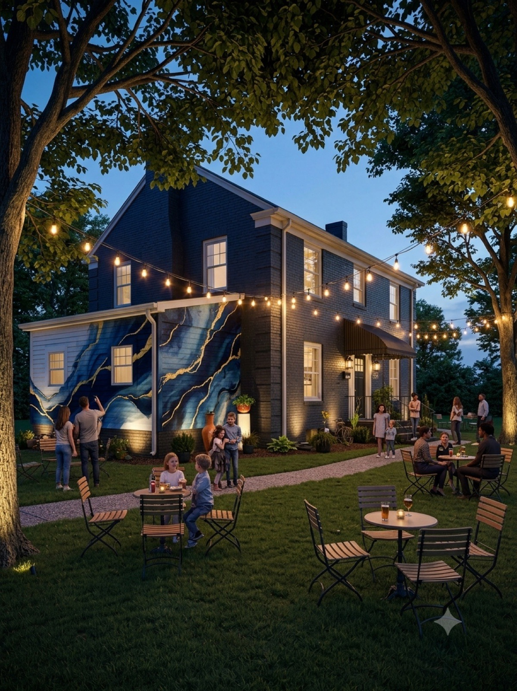
Within these pages is an opportunity to preserve history, inspire creativity, strengthen neighborhoods, and create lasting economic impact.
Whether you are a public agency, philanthropic foundation, corporate leader, community advocate, or individual supporter, we invite you to imagine what is possible when vision meets partnership.
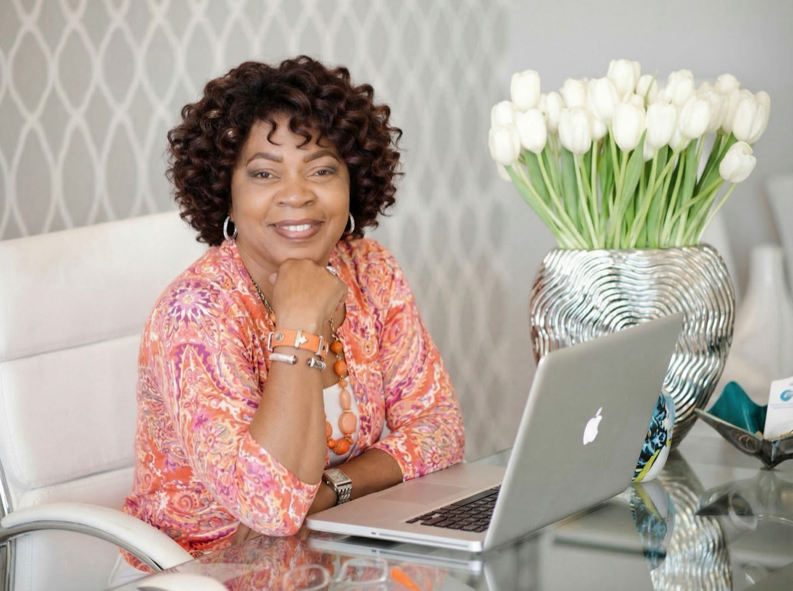
Thank you for taking the time to learn about The Art Haus Cultural Venue.
Whether you represent a public agency, a philanthropic foundation, a corporate organization, or a community partnership, I am grateful that you have chosen to spend a few moments exploring a vision that has become deeply personal to my family and me.
The Art Haus was never intended to be simply another venue.
It was envisioned as a place where creativity is celebrated, history is preserved, relationships are built, and communities come together. A place where artists have an opportunity to share their gifts, entrepreneurs can cultivate new ideas, nonprofit organizations can expand their impact, and families can create lasting memories.
For me, this project is rooted in both purpose and place.
Historic Camp Greene is more than the location of this development. It is the community where I have lived, served, and invested my time for many years. It is a neighborhood that has shaped my understanding of leadership, resilience, and the importance of creating opportunities that benefit future generations.
As I have worked to bring this vision to life, I have discovered that meaningful development is about far more than restoring buildings. It is about restoring possibilities. It is about creating spaces where people feel inspired, welcomed, and connected. It is about honoring the history of a community while preparing it for the opportunities of tomorrow.
This journey has not always been easy.
Like many visionary projects, there have been moments of uncertainty, unexpected challenges, and difficult decisions. Yet each obstacle has strengthened my conviction that this project is worth pursuing. Along the way, I have been reminded that perseverance is one of the greatest investments we can make in a dream that serves others.
One of the greatest lessons I have learned is that transformational projects are never built alone.
They are shaped by people who believe in a shared vision. They grow through collaboration, trusted relationships, and partnerships built on mutual respect and a commitment to creating lasting impact.
That philosophy has guided every decision I have made for The Art Haus.
Rather than viewing support as a transaction, I see every partnership as an opportunity to create something meaningful together. Every organization, foundation, business, public agency, and individual who joins this journey can have the opportunity to leave a legacy—not only within this building, but throughout the community it is designed to serve.
As Founder and Developer, my commitment extends beyond completing a construction project. My goal is to steward a place that reflects the creativity, diversity, resilience, and spirit of Charlotte while honoring the rich history of Historic Camp Greene.
My hope is that, years from now, people will simply not remember The Art Haus because of the events held within its walls. They will remember it because it became a place where opportunities were created, relationships were strengthened, artists were celebrated, entrepreneurs were encouraged, history was preserved, and communities came together.
Thank you for considering how you might become part of this journey.
I invite you to imagine what is possible when vision is matched with partnership, when history inspires innovation, and when a community comes together to build something that will serve generations to come.
Together, we have an opportunity to create more than a destination.
Together, we can create a legacy.
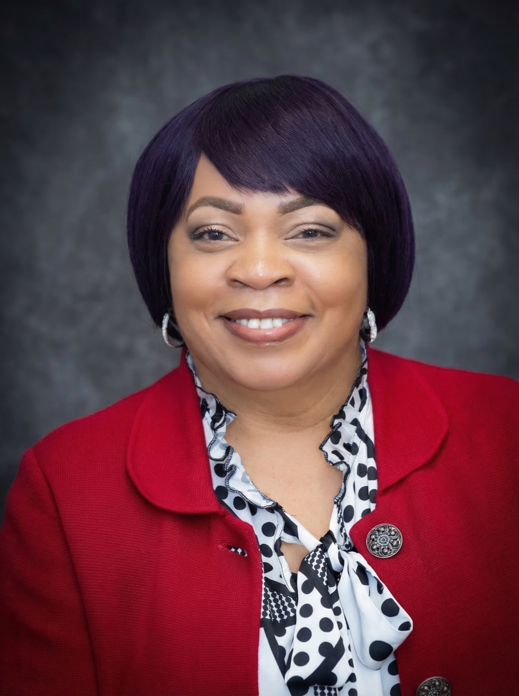
Every Legacy Begins with a Vision · Why The Art Haus Matters
A Place with Purpose · The Art Haus at a Glance
The Ripple Effect · Community Impact Dashboard
Why Partnership Matters · Partnership Pathways · Beyond Financial Investment
Building with Purpose · Development Roadmap · Stewardship Through Leadership · A Sustainable Future
An Invitation to Build Together · Join Us
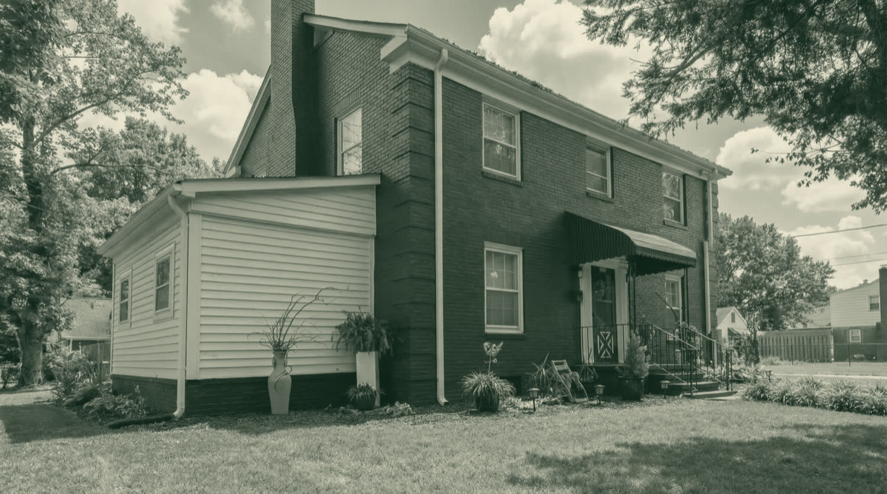
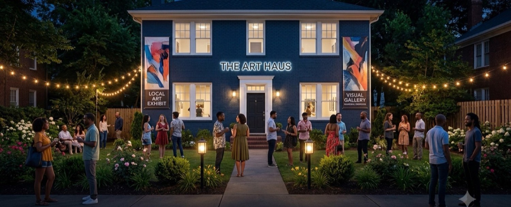
The Art Haus Cultural Venue began with both.
For as long as I can remember, my family has been rooted in the arts and entertainment. Creativity has always been woven into who we are. It has shaped our experiences, strengthened our relationships, and inspired us to dream beyond what seemed possible.
Then life changed.
After losing my beautiful daughter to breast cancer, I found myself searching for purpose through unimaginable grief. She was exceptionally gifted in marketing and possessed a creative spirit that left a lasting impression on everyone who knew her. While no project could ever replace what was lost, I realized that the greatest way to honor her memory was to continue building something that reflected the creativity, resilience, and love our family shared.
The Art Haus became that vision.
What began as an idea gradually became something much greater, a commitment to create a place where creativity could flourish, where families could gather, where artists could be celebrated, and where future generations could experience the power of community.
Having the opportunity to develop property in Historic Camp Greene transformed that vision into something tangible. It offered the chance not only to restore a historic space, but also to create a destination that would inspire pride throughout the neighborhood I have called home.
Historic Camp Greene is more than a location on a map.
It is the community where I have lived, worked, volunteered, and advocated for positive change. I have witnessed its challenges, celebrated its victories, and believed in its potential even when others overlooked it. My hope is that The Art Haus becomes a reflection of that same determination—a place where history is honored, creativity is encouraged, and people from every background feel welcomed.
As a woman of color pursuing a complex development project, there have been moments when others questioned whether this vision could become reality. Those doubts never defined me.
Instead, they strengthened my resolve.
Throughout this journey, I have learned to adapt, to persevere, and to keep moving forward. Every obstacle has become another opportunity to learn, improve, and grow stronger.
I have never believed that challenges determine our future. Our response to them does.
The Art Haus is not simply about restoring a building. It is about restoring possibilities.
It is about creating opportunities for artists seeking a place to share their work, entrepreneurs searching for spaces to connect, families looking for meaningful experiences, and communities longing for places that inspire hope.
Twenty years from now, I hope people will not only remember The Art Haus for its beautiful architecture or memorable events.
I hope they remember the legacy behind its success. I hope they remember that a family believed in its community. Those partners believed in a vision.
And that together, we created a place where history continues to inspire the future.
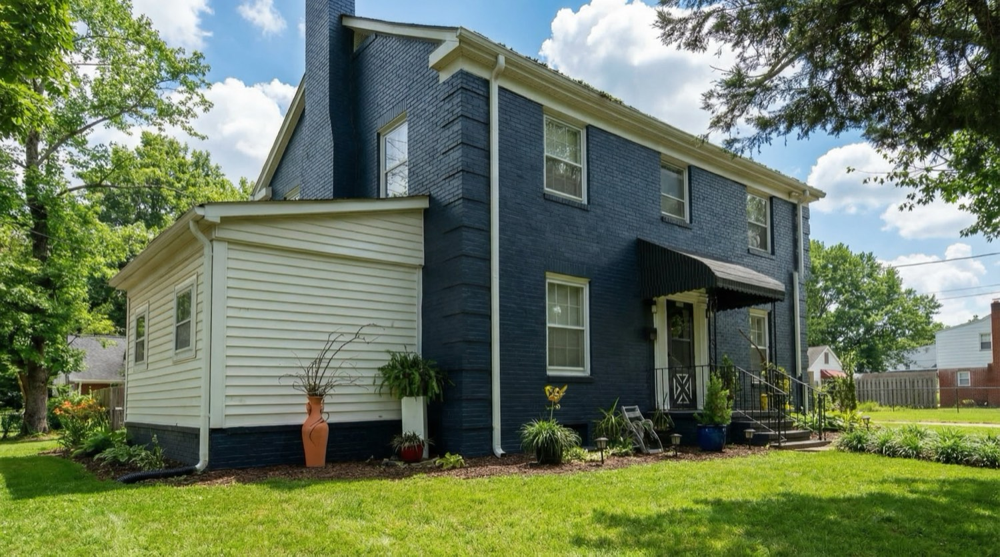
Charlotte is one of the fastest-growing cities in the nation, attracting new residents, businesses, and investment at an extraordinary pace. As the city grows, so does the need for places that preserve its history, celebrate its diversity, and strengthen the connections that make neighborhoods feel like home.
Historic Camp Greene is one of those places.
Rich in history and resilient in spirit, Historic Camp Greene has long been shaped by the people who have invested their time, talents, and passion into building a stronger community. It is a neighborhood with a proud past and an even greater future—one that deserves spaces where culture, creativity, and community can thrive together.
The Art Haus Cultural Venue was envisioned to become one of those spaces.
More than a venue, The Art Haus is a community asset designed to serve multiple purposes under one roof. It will provide opportunities for local artists to exhibit their work, musicians to perform, entrepreneurs to host events, nonprofit organizations to engage the community, and families to celebrate life’s most meaningful moments.
Its purpose extends beyond entertainment.
The Art Haus is designed to strengthen the creative economy by providing a welcoming environment where artists, makers, performers, educators, and small businesses can collaborate and grow. It is intended to become a place where ideas are shared, relationships are formed, and opportunities are created.
The project also reflects a deep commitment to historic preservation. Rather than replacing an existing property, The Art Haus embraces the opportunity to restore and reimagine a historic space, preserving the character of Historic Camp Greene while preparing it to serve future generations.
This investment is not only in a building.
It is an investment in people. It is an investment in neighborhood pride. It is an investment in Charlotte’s creative community. It is an investment in the belief that arts and culture are essential components of healthy, vibrant neighborhoods.
As Charlotte continues to evolve, communities need places where people of every generation and every background can come together. Places where children discover creativity, artists find opportunities, entrepreneurs build relationships, and families create lasting memories.
The Art Haus has been intentionally designed to become that place.
Its impact will extend far beyond its walls. Every exhibition, performance, workshop, celebration, and community gathering will contribute to a broader vision of strengthening Historic Camp Greene while enriching Charlotte’s cultural landscape.
Success will not be measured solely by attendance or revenue.
It will be measured by the artists whose careers begin here. Entrepreneurs who find new opportunities here. The nonprofit organizations that expand their reach here. The families who celebrate life’s milestones here. The visitors who leave with a deeper appreciation for Charlotte’s history and creativity. The neighbors who proudly say, “This is part of our community.”
The Art Haus represents the belief that when a community invests in creativity, it also invests in education, economic opportunity, cultural preservation, and hope.
That is why The Art Haus matters. Not simply because another venue is being built. But because a community is building its future while honoring its past.
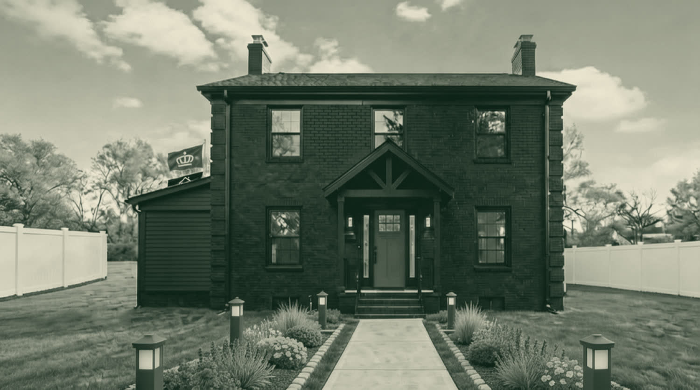
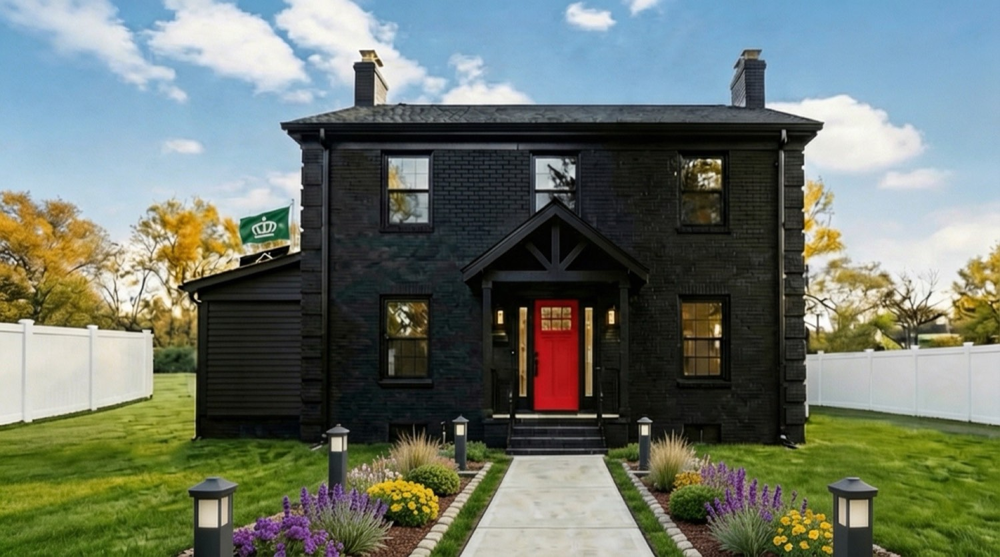
Every community has places that quietly hold its history.
Places where stories have unfolded over generations. Places that deserve not to be forgotten, but to be given new life.
For The Art Haus Cultural Venue, that place is Historic Camp Greene.
This project did not begin with the search for a building. It began with a commitment to invest in a community that has long been a part of my life.
Historic Camp Greene is where I have lived, worked, served, and advocated for positive change. It is a neighborhood that has shaped my understanding of community, resilience, and the importance of creating spaces where people feel connected and valued.
When I first looked at this property, I didn’t simply see walls, square footage, or development potential. I saw possibility.
I imagined a place where artists could proudly display their work. Where musicians could fill the room with music. Where entrepreneurs could launch new ideas. Where nonprofit organizations could host events that strengthen the community. Where families could celebrate life’s most meaningful moments. And where every visitor would feel welcomed.
The existing property offered something increasingly rare, the opportunity to preserve history while creating something entirely new. Rather than replacing what was already here, The Art Haus embraces adaptive redevelopment by honoring the character of the building while transforming it into a vibrant cultural destination for future generations.
Every improvement planned for this property has been guided by one question:
How can this space best serve the community?
The answer has shaped every aspect of the vision. Flexible gathering spaces that welcome organizations of every size. Thoughtfully designed areas for art exhibitions and performances. Comfortable indoor and outdoor environments encourage conversation, celebration, and connection. A destination where creativity and community exist side by side.
The Art Haus has never been about constructing the largest venue. It has always been about creating the right venue. A place where every square foot has purpose. A place where history is respected. A place where people feel inspired. A place where memories are created.
As Charlotte continues to grow, opportunities to preserve historic spaces become increasingly valuable. The Art Haus demonstrates that redevelopment is not only about buildings, but also about honoring the stories that came before us while creating opportunities for those who will follow.
The transformation of this property represents more than physical construction. It represents confidence in Historic Camp Greene. Confidence in Charlotte’s creative community. Confidence in local entrepreneurs. Confidence in artists. Confidence in families. Confidence in the belief that neighborhoods become stronger when they have places that bring people together.
When visitors walk through the doors of The Art Haus, we hope they see more than beautiful architecture. We hope they see what is possible when vision, preservation, and community come together with purpose.
Because every great destination begins with a place. But the places people remember are the ones that make them feel like they belong.
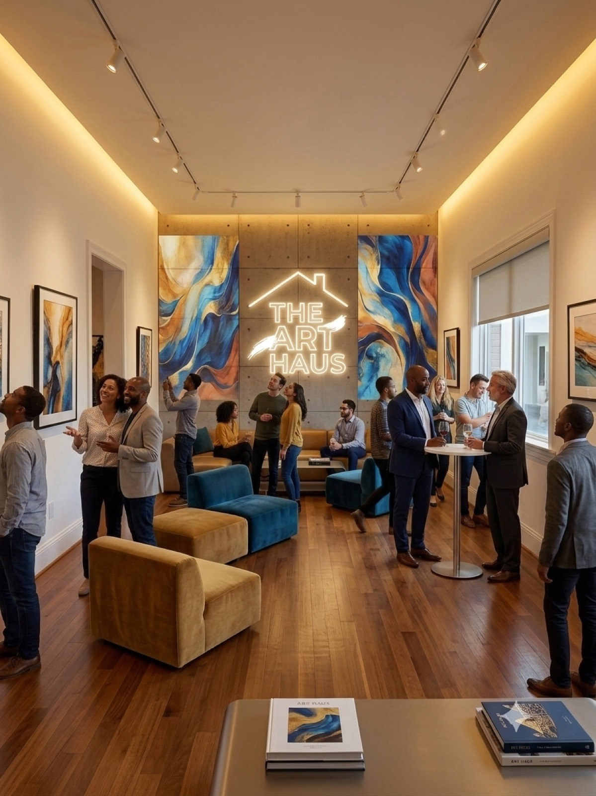
To preserve history, celebrate creativity, and strengthen community through arts, culture, entrepreneurship, and meaningful partnerships.
To become one of Charlotte’s premier cultural destinations where history inspires the future and every partnership leaves a legacy.
Strategic Partnerships. Pre-Construction & Partnership Development.
Public Sector · Foundations · Corporations · Arts & Culture · Education · Healthcare & Wellness · Community Organizations · Entrepreneurs
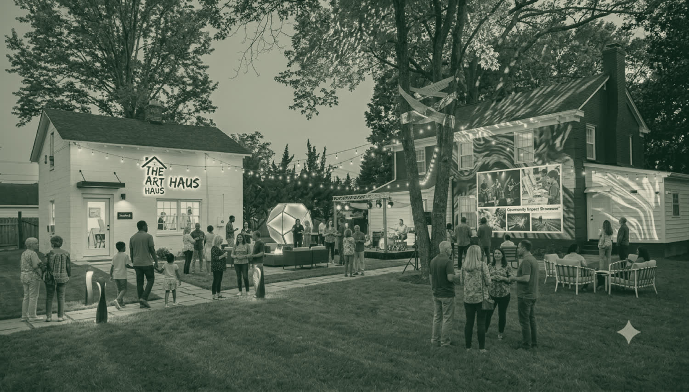
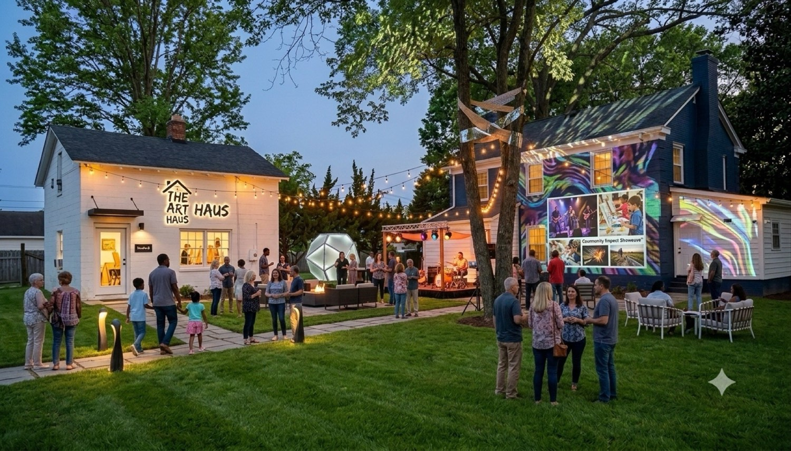
“Adaptive reuse preserves community character while reducing environmental impact compared with new construction.”
Every transformational project begins with one decision.
A decision to believe in possibility before everyone else can see it. The Art Haus Cultural Venue is one such decision.
At first glance, it may appear to be the redevelopment of a historic building. But its true impact extends far beyond bricks and mortar. Like a stone cast into still water, every investment in The Art Haus creates a ripple that reaches far beyond the property itself.
The first ripple begins with the neighborhood.
By preserving and revitalizing a historic property in Historic Camp Greene, The Art Haus contributes to the ongoing story of a community that deserves continued investment, thoughtful development, and opportunities that honor its rich history while embracing its future.
The second ripple reaches the creative community.
Artists gain a place to exhibit their work. Musicians gain a stage. Performers gain an audience. Creators gain a home where their talents are celebrated and supported.
The third ripple reaches entrepreneurs and small businesses.
The Art Haus will provide a welcoming environment where business owners, makers, and innovators can host events, build relationships, and introduce their work to new audiences. Collaboration becomes the foundation for growth.
The fourth ripple reaches nonprofit organizations, educators, and community leaders.
The venue will provide a flexible gathering place for workshops, meetings, educational programs, fundraising events, and initiatives that strengthen the social fabric of Charlotte.
The fifth ripple reaches families.
It becomes a place where milestones are celebrated, traditions are created, and memories are shared across generations.
The final ripple extends beyond today’s community.
It reaches future generations. Children who attend their first art exhibition. Young entrepreneurs who discover new possibilities. Artists who find the confidence to share their gifts. Visitors who leave with a deeper appreciation for Charlotte’s history and culture. Neighborhood residents who proudly point to The Art Haus as a symbol of what is possible when vision and partnership come together.
This is the true return on investment. Not measured only in financial statements, but in strengthened neighborhoods, expanded opportunities, preserved history, inspired creativity, and lives touched through meaningful experiences.
The Art Haus was never intended to serve one purpose. It was created to become a catalyst. A place where every event, every partnership, every performance, every conversation, and every act of collaboration create another ripple of positive impact.
Because when a community invests in one meaningful place, that place has the power to inspire countless possibilities. That is the ripple effect. And that is the legacy we hope to build together.
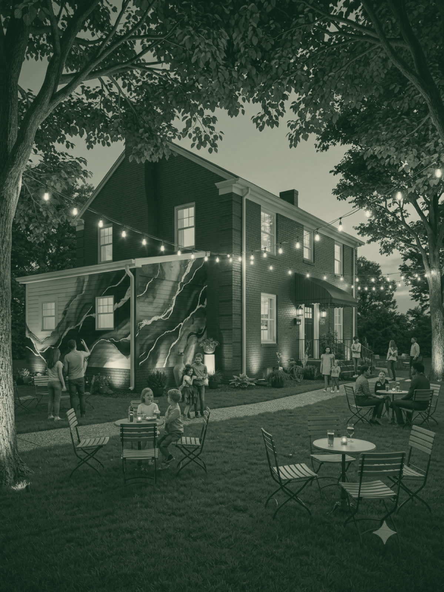
The Art Haus Cultural Venue was never envisioned as a project built by one individual or sustained by one source of funding.
From the beginning, this vision has been rooted in the belief that lasting community transformation happens when public agencies, private organizations, philanthropic foundations, businesses, nonprofit leaders, artists, and residents work together toward a common purpose.
That belief continues to shape every decision we make.
As Founder and Developer, I have intentionally pursued a partnership-centered approach because I believe meaningful collaboration creates stronger, more sustainable outcomes than any single funding source ever could.
The Art Haus is not seeking partners solely to complete a development project. We are seeking partners who believe in preserving history, expanding opportunities, supporting creativity, strengthening neighborhoods, and investing in places where communities can gather, learn, celebrate, and grow together.
Each partnership contributes something unique.
Some partners provide financial resources. Others contribute expertise, programming, community relationships, technical assistance, or strategic guidance. Together, these contributions create a foundation that is stronger than any individual investment.
This collaborative approach also reflects our long-term commitment to maintaining local ownership while building a project that serves the broader public good. Rather than viewing support as a transaction, we view every partnership as a shared investment in Charlotte’s future.
The Art Haus will have the opportunity to become more than a cultural venue. It can become a model for how thoughtful redevelopment, historic preservation, arts, entrepreneurship, education, and community engagement can work together to strengthen neighborhoods for generations to come.
Every organization that joins this journey becomes part of that story. Every partnership expands the impact. Every contribution strengthens the legacy.
Because together, we are not simply restoring a historic property. We are creating a place where people, ideas, creativity, and community come together with purpose.
That is the opportunity before us.
Partners contribute to the preservation and revitalization of a historic community asset.
Support creates opportunities for artists, entrepreneurs, nonprofit organizations, families, and residents.
The Art Haus advances goals related to economic development, arts and culture, education, historic preservation, and community engagement.
We believe partnerships extend beyond funding. They are built on collaboration, trust, transparency, and shared success.
The project is designed to create diverse revenue streams and long-term operational sustainability while preserving local ownership.
The Art Haus Cultural Venue has been intentionally designed as a collaborative project that welcomes organizations from many sectors to contribute in meaningful ways.
Whether through financial support, programming, expertise, sponsorship, education, or community engagement, every partner plays a vital role in helping this vision become reality.
Our partnership model is built upon the understanding that transformational projects succeed when diverse organizations work together toward a common purpose.
We invite partners to engage in ways that align with their mission, values, and desired community impact.
At The Art Haus, we recognize that meaningful partnerships come in many forms. Some organizations provide funding. Others offer professional expertise. Some contribute educational programming. Others open doors to new relationships, resources, and opportunities.
Every contribution strengthens this vision. We welcome partnerships that include:
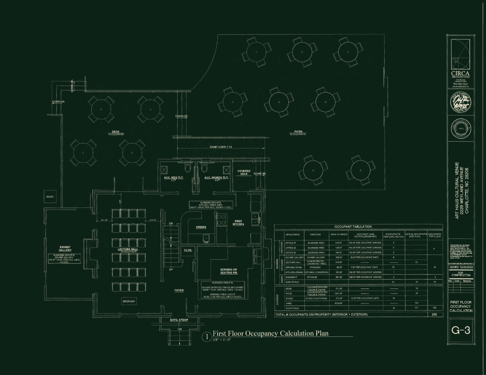
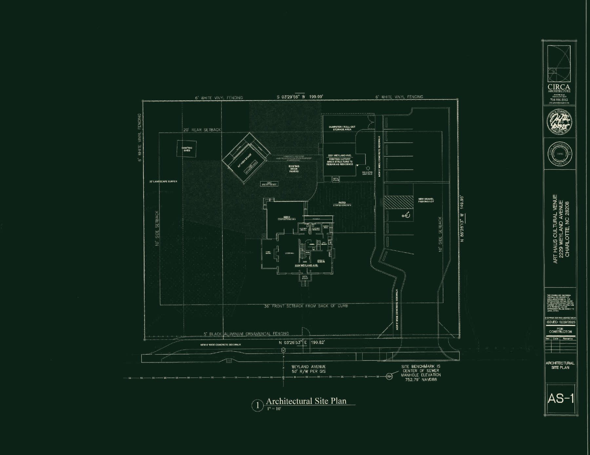
The Art Haus Cultural Venue has never been about building quickly. It has always been about building responsibly.
Every milestone achieved to date has been guided by thoughtful planning, community engagement, and a long-term commitment to creating a destination that will serve Historic Camp Greene and the City of Charlotte for generations.
Rather than pursuing rapid development, we have intentionally invested time in building a strong foundation. This deliberate approach has allowed us to refine the vision, strengthen community relationships, assemble a team of experienced professionals, and position the project for long-term success.
Our roadmap reflects more than a construction schedule. It reflects our commitment to stewardship, accountability, and excellence.
Every phase has been designed to ensure that The Art Haus remains financially sustainable, operationally strong, and deeply connected to the community it serves.
The journey has already begun. The next chapter is bringing the vision to life.
A multigenerational vision to preserve a historic property while creating a cultural destination that celebrates arts, entrepreneurship, and community.
Acquisition of the property in Historic Camp Greene, ensuring local ownership and long-term stewardship.
Architectural plans completed · Site planning · Feasibility analysis · Development budgeting · Community engagement
REDI Real Estate Development Incubator · REDI Shark Tank Showcase · Mecklenburg County Business Launch Pad · Ongoing business counseling · Partnership development
Current priorities include:
Foundation partnerships · Public-private partnerships · Corporate engagement · Grant opportunities · Community collaborations · Programming partnerships
Final permitting · Contractor selection · Capital commitments · Construction scheduling · Procurement
Site preparation · Interior renovation · Exterior improvements · Technology integration · Furnishings · Final inspections
Launching a destination that welcomes artists, entrepreneurs, nonprofit organizations, businesses, and the community into a vibrant new cultural home.
The Art Haus is guided by a philosophy of stewardship.
As Founder and Developer, I believe every decision should honor the history of Historic Camp Greene, respect the trust of our partners, and create value for future generations.
Our leadership approach emphasizes thoughtful decision-making, collaborative partnerships, and long-term sustainability rather than short-term success.
We believe that preserving local ownership while welcoming strategic partnerships creates the strongest foundation for lasting community impact.
This philosophy shapes how we develop the project, engage stakeholders, and measure success.
Cynthia has worked in event management for more than 20 years and has run her own business for 19 years (Changes Away LLC), with deep expertise in event production and design. She has organized many memorable events for the City and County of Charlotte.
A longtime Historic Camp Greene leader, she received the City of Charlotte Neighborhood Leadership Award in 2019, and in 2023 a dedicated bench in Dowd Park was placed in her honor.
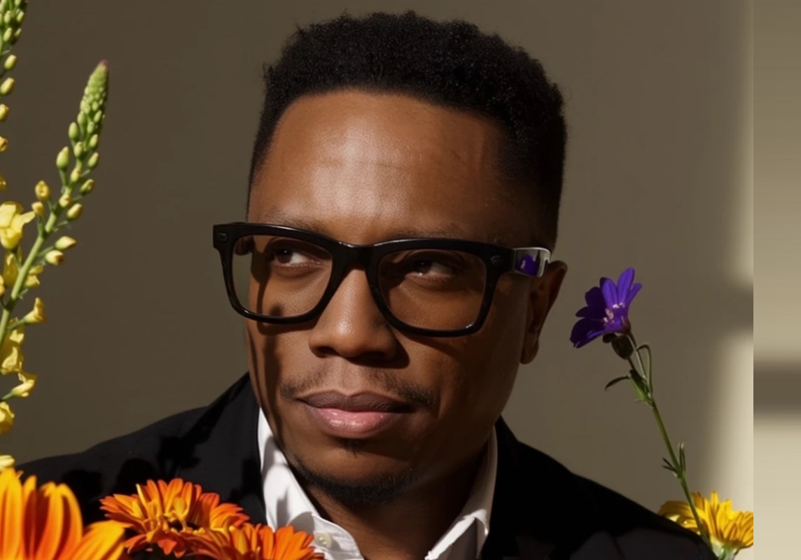
Charlotte-born, award-winning art director. Eighteen years creating brands, live shows and experiences that move culture, from MTV and BET to the Essence Festival and the Apollo Theater. Grew Hollywood Unlocked from nothing to a roughly $50M valuation. At The Art Haus he leads brand, design and storytelling.
Creates unique experiences through visual art and entertainment, making sure each client's message and image reach their audience. Shapes the overall look of campaigns and coordinates designers and other artists.
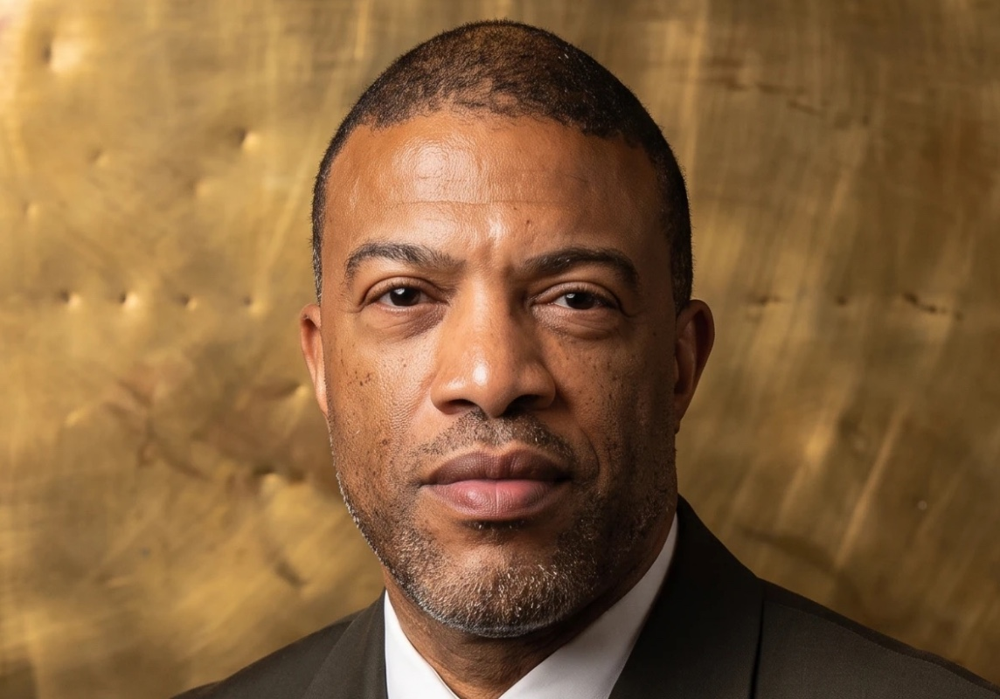
Since 2017, has helped run daily retail operations and mixed-beverage sales for the Mecklenburg County ABC Board, with working knowledge of every store-manager function under North Carolina ABC rules.
The Art Haus has been designed with sustainability at its core—not only in the preservation of a historic structure but also in its operational and financial model.
Rather than relying on a single source of income, the venue will generate revenue through a balanced portfolio of activities that support both financial resilience and community engagement.
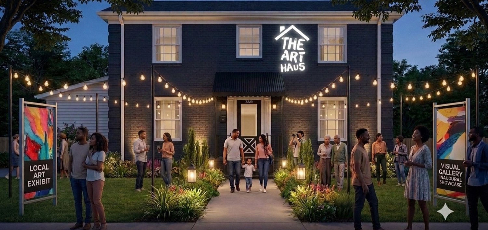
The Art Haus Cultural Venue has never been about constructing a building. It has always been about creating a place where creativity is encouraged, history is honored, partnerships are cultivated, and communities flourish.
Every brick restored...
Every artist supported...
Every entrepreneur encouraged...
Every family welcomed...
Every nonprofit empowered...
Every young person inspired...
Becomes part of something far greater than a single development project. It becomes part of a legacy.
The future of The Art Haus will not be written by one individual. It will be shaped by the collective vision of public leaders, philanthropic organizations, businesses, educators, artists, community advocates, and residents who believe that investing in people and place creates lasting change.
This publication is not simply an overview of a project. It is an invitation.
An invitation to preserve history. To celebrate creativity. To strengthen community. To expand opportunity. To create a place that future generations will proudly call their own.
Whether your contribution is financial, strategic, educational, artistic, or relational, your partnership has the potential to influence lives for decades to come.
That is the opportunity before us.
Together, we can create more than a destination.
Together, we can create a legacy.
Collaborate with us to create lasting community impact.
Help preserve history while shaping Charlotte’s cultural future.
Share the vision and expand opportunities through your network.
Join us as we bring The Art Haus to life.